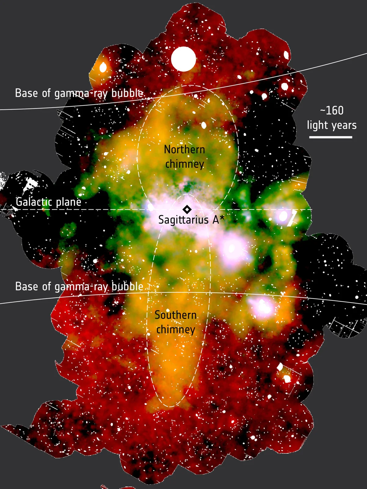

Sagittarius A*

Overview
Sagittarius A* (pronounced "Sagittarius A-star") is the supermassive black hole at the very center of our Milky Way galaxy. It holds about four million times the mass of the Sun packed into a space smaller than Mercury's orbit. Thick clouds of dust block it from view in visible light, so astronomers study it using radio waves, infrared light, and X-rays. By tracking stars that whip around it at incredible speeds, scientists proved that something extremely massive and invisible sits there.
Interesting Facts
- The first image of Sagittarius A* was released in 2022 by the Event Horizon Telescope, a network of radio telescopes around the world.
- Even with its huge mass, Sagittarius A* is fairly quiet, because very little nearby gas actually falls into it.
Quick Facts
- Type: Supermassive black hole
- Distance from Earth: About 26,000 light-years
- Size: About 4 million times the mass of the Sun
- Discovery: Detected as a radio source in 1974; stars orbiting it later confirmed it is a black hole